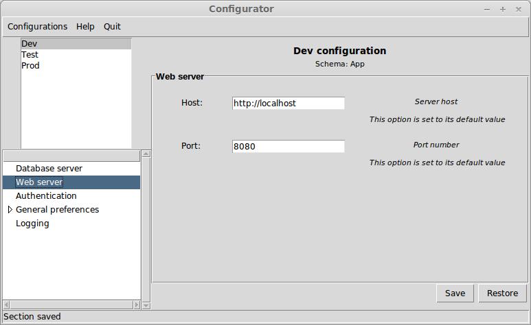
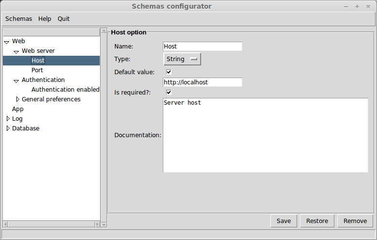
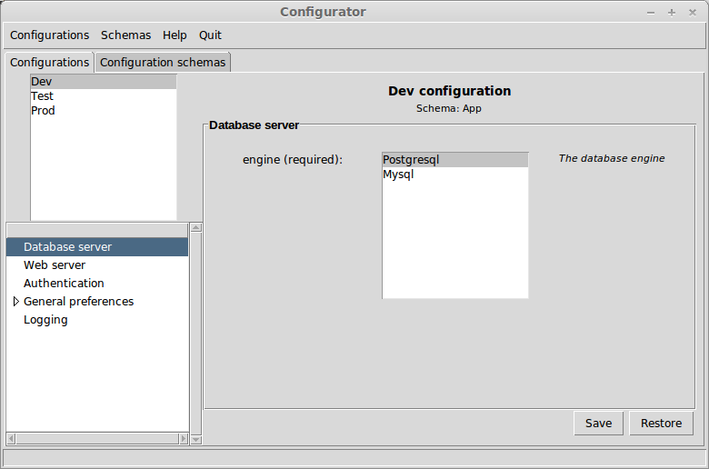

Configurator - A configuration management utility
This is Configurator library documentation
1. Introduction
Configurator is a configuration management utility.
You can get a copy and this manual at http://mmontone.github.io/configurator
1.1 Summary
Configurator is a configuration management utility
1.2 Installation
1.3 Feedback
Mail marianomontone at gmail dot com with feedback
1.4 Conventions
Hear are some coding conventions we’d like to follow:
-
We do believe in documentation. Document your dynamic variables, functions, macros and classes. Besides, provide a documentation from a wider perspective. Provide diagrams and arquitecture documentation; examples and tutorials, too. Consider using an automatic documentation generator (see the bitacora package in the dependencies).
-
We don’t want functions to be shorter than the should nor longer than they should. There is no "every function should have at most ten lines of code" rule. We think that coding is like literature to a great extent. So you should strive for beauty and clarity.
2. Overview
Configurator is a configuration management utility. It is written in Python and provides a Tk GUI at the moment.
The idea is to define configuration schemas and get a proper way of:
-
Sharing and versioning your project’s configuration schemas, but not your configurations. That way, you avoid overwriting configurations from different developers. Each developer has his own configurations that need to match the configuration schemas in the project. Whenever a project’s configuration schema changes, each developer is reponsible of updating his configurations to match the new schemas.
-
Being able to define configuration schemas from the GUI, with no need for programming for most cases.
-
Provide configurations documentation and validation.
-
Edit configurations from a GUI.
-
Define your own option configurations types and provide validation for them.
3. Running
3.1 Running overview
Configurator is run invoking configurator command from the command line. By default, it runs in normal mode; that means, it opens a GUI for adding, removing and editing configurations.
A configurations schemas files is required. By default, Configurator looks for configurator.schema in the current directory. It shows and errors if it can not find it. A different file or location can be specified through the –schemas SCHEMAS option.
If the schemas file is found, then it is parsed and loaded. The schemas file is in XML format.
Apart from that, Configurator maintains configurations in another file, which by default is configurator.config. It can be specified to be something else through the –configs CONFIGS option.
3.2 Running modes
Configurator can be run in three different modes fundamentally.
-
Normal mode: this mode is invoked running configurator with no special arguments from the command line (apart from the schema and configs arguments). In this mode, the standard configuration navigation UI is opened. This UI si meant for end users. The user can create, remove and edit his configurations from here. He doesn’t need to know how to build a configuration schema (although that is not difficult at all, as we will see.) Apart from that, when editing the configuration, the user gets a (hopefully) decent UI with custom option editors depending on the type of options and validation.
This is an example of Configurator running in normal mode:

-
Setup mode: this mode is invoked running configurator with the –setup option from the command line. In this mode, the configuration schemas navigator UI is opened. The developer can create, remove and edit configuration schemas from here. Configuration schemas are descriptions of how configurations should be, with nested sections and different type of options. He can build the application specific configuration schemas from here.
This is an example of Configurator running in setup mode:

-
Full mode: this mode is invoked running configurator with the –full option from the command line. In this mode, both the configurations navigator and the configurations schemas navigator are available in two different tabs.
This is an example of Configurator running in full mode:

3.3 Command line summary
$> configurator -h
usage: configurator.py [-h] [-f] [-s SCHEMAS] [-c CONFIGS] [--setup] [--debug]
Configurator. Configuration management utility.
optional arguments:
-h, --help show this help message and exit
-f, --full Run the full configurator (both configurations and
schemas navigation)
-s SCHEMAS, --schemas SCHEMAS
The configuration schemas files. Default is
configurator.schema
-c CONFIGS, --configs CONFIGS
The configurations file. Default is
configurator.config
--setup Edit configuration schemas
--debug Run in debug mode
4. Configuration schemas
Configuration schemas define the structure of a configuration.
-
configuration-schema-name is the name of the configuration-schema and the configuration-schema is globally identified by it. See find-configuration-schema
-
parent-configuration-schema is the configuration schema we inherit from. Inheriting from a configuration schema means adding its sections to the child schema. Configuration schemas can inherit from several parents
-
configuration-schema-documentation is the configuration schema documentation. This is not a required argument. It is also used from the editing GUI and is very useful for the configuration schema user.
That is a typical configuration schema needed to connect to a database.
It has only one section Database where the user is supposed to specify the connection type, the database name, the username, password, and extra parameters needed to connect to a database. In this case, most of the options are of type String.
4.1 Built-in option types
4.1.1 String
The String option type ensures that the the option value is of type string.
4.1.2 Number
The Number option type ensures that the the option value is of type Number.
4.1.3 Boolean
The boolean option type ensures that the the option value is of type boolean (True or False).
4.1.4 Email
The email option type ensures that the the option value is a valid email string.
4.1.5 Url
The url option ensures that the the option value is a valid url.
4.1.6 Filename
The pathaname option type ensures that the the option value is a valid pathname and the file or directory exists.
4.1.7 Choice
The Choice option type ensures that the option value is one of the options listed.
4.1.8 List
The List option type ensures that the option value is a subset of the options listed.
5. Configurations
How to define configurations
5.1 Working with configurations
The API for working with configurations
5.2 Configurations serialization
There are two output backends: an sexp-backend and a xml-backend
6. Examples
Schemas definitions:
| | <schemas>
<schema name="Web">
<documentation></documentation>
<section name="Web server">
<documentation></documentation>
<option name="Host">
<documentation>Server host</documentation>
<type name="String"/>
<required>True</required>
<default>http://localhost</default>
</option>
<option name="Port">
<documentation>Port number</documentation>
<type name="Number"/>
<required>True</required>
<default>8080</default>
</option>
</section>
<section name="Authentication">
<documentation></documentation>
<option name="Authentication enabled">
<documentation>Enable authentication?</documentation>
<type name="Boolean"/>
<required>False</required>
</option>
</section>
<section name="General preferences">
<documentation></documentation>
<option name="Font size">
<documentation>Font size</documentation>
<type name="Number"/>
<required>True</required>
</option>
<section name="Colors">
<documentation></documentation>
<option name="Background color">
<documentation>Background color</documentation>
<type name="Color"/>
<required>True</required>
</option>
</section>
</section>
</schema>
<schema name="App">
<documentation></documentation>
<parent name="Database"/>
<parent name="Web"/>
<parent name="Log"/>
</schema>
<schema name="Log">
<documentation></documentation>
<section name="Logging">
<documentation></documentation>
<option name="Logfile">
<documentation>Where the logging happens</documentation>
<type name="Filename"/>
<required>True</required>
</option>
<option name="Expire">
<documentation>Expiration</documentation>
<type name="Datetime"/>
<required>True</required>
</option>
</section>
</schema>
<schema name="Database">
<documentation></documentation>
<section name="Database server">
<documentation></documentation>
<option name="engine">
<documentation>The database engine</documentation>
<type name="Choice">
<option value="Postgresql"/>
<option value="Mysql"/>
</type>
<required>True</required>
</option>
</section>
</schema>
</schemas>
|
Configurations definitions:
| | <configurations>
<configuration name="Dev">
<schema name="App"/>
<option path="Database.Database server.engine" value="Postgresql"/>
</configuration>
<configuration name="Test">
<schema name="App"/>
<parent name="Dev"/>
<option path="Database.Database server.engine" value="Mysql"/>
</configuration>
<configuration name="Prod">
<schema name="Web"/>
<option path="Web.Authentication.Authentication enabled" value="True"/>
<option path="Web.General preferences.Colors.Background color" value="#6ed9d9"/>
</configuration>
</configurations>
|
6.1 Use cases
6.1.1 Debugging
6.1.2 Logging
6.1.3 Testing
6.1.4 Deployment
7. Frontend
Configurations can be edited from a Tk interface.
8. Custom option types
How to define custom option types
9. System reference
10. References
11. Index
11.1 Concept Index
11.2 Class Index
11.3 Function Index
11.4 Variable Index
Table of Contents
About This Document
This document was generated by marian on December 26, 2013 using texi2html 1.82.
The buttons in the navigation panels have the following meaning:
| Button |
Name |
Go to |
From 1.2.3 go to |
| [ < ] |
Back |
Previous section in reading order |
1.2.2 |
| [ > ] |
Forward |
Next section in reading order |
1.2.4 |
| [ << ] |
FastBack |
Beginning of this chapter or previous chapter |
1 |
| [ Up ] |
Up |
Up section |
1.2 |
| [ >> ] |
FastForward |
Next chapter |
2 |
| [Top] |
Top |
Cover (top) of document |
|
| [Contents] |
Contents |
Table of contents |
|
| [Index] |
Index |
Index |
|
| [ ? ] |
About |
About (help) |
|
where the Example assumes that the current position is at Subsubsection One-Two-Three of a document of the following structure:
- 1. Section One
- 1.1 Subsection One-One
- 1.2 Subsection One-Two
- 1.2.1 Subsubsection One-Two-One
- 1.2.2 Subsubsection One-Two-Two
- 1.2.3 Subsubsection One-Two-Three
<== Current Position
- 1.2.4 Subsubsection One-Two-Four
- 1.3 Subsection One-Three
- 1.4 Subsection One-Four
This document was generated by marian on December 26, 2013 using texi2html 1.82.